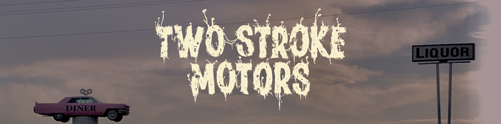
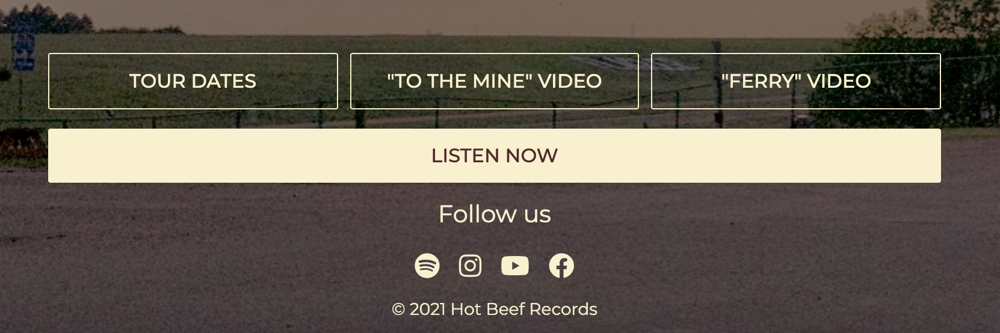
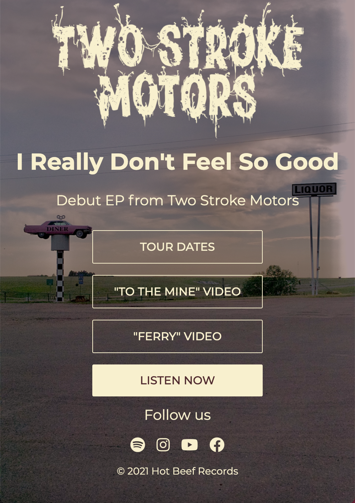

Two Stroke Motors
I was asked by Two Stroke Motors to create a website in anticipation of their upcoming album release. Working closely with the band I developed a simple concept that met the band's content needs while aligning with their branding guidelines.
Deliverables
- UX/UI
- Web Design
- Web Development
Year
2021
Tech
- HTML
- CSS
- JavaScript

Bold, fun, and bit gritty.
Two Stroke's brand called for a design that was straightforward while incorparating a touch of humor. With this in mind I designed a simple splash page with a grid of relevant links. Hover over the last "s" in Motors and you'll find a secret button that generates a random link.


